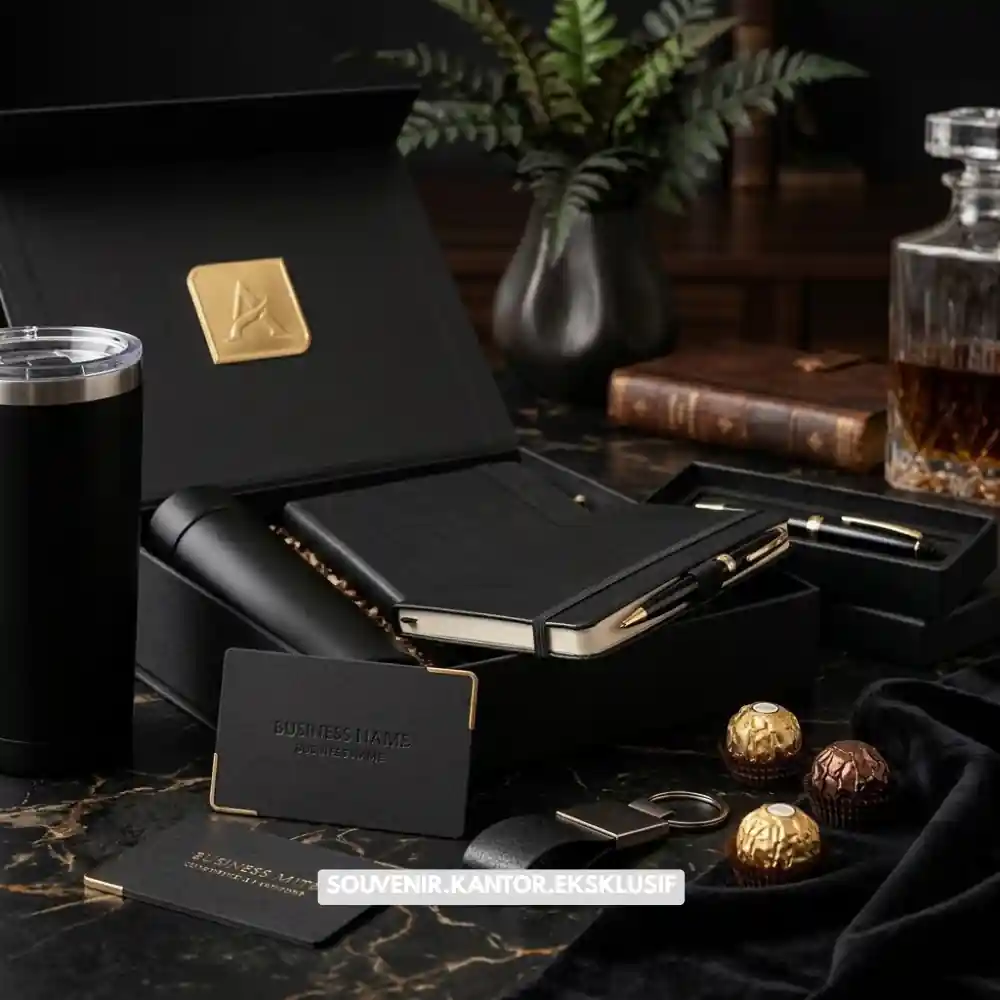

Daftar Isi
Corporate gift package custom logo adalah hadiah korporat yang dicetak dengan identitas visual perusahaan agar brand lebih mudah dikenali penerima.
- Custom logo membuat corporate gift package lebih mudah dikenali dan diingat penerima.
- Konsistensi warna dan tipografi brand penting diterapkan di seluruh elemen paket.
- Beberapa teknik cetak memiliki karakteristik hasil akhir yang berbeda-beda.
- Pemilihan produk memengaruhi seberapa optimal hasil cetak logo terlihat.
- VendorSouvenir.web.id menyediakan layanan custom logo dengan hasil presisi dan tahan lama.
Elemen visual seperti logo, warna korporat, dan tipografi brand yang konsisten membantu hadiah terlihat lebih profesional dibandingkan produk generik tanpa identitas.
Pendekatan ini banyak digunakan perusahaan untuk memastikan setiap hadiah yang diberikan benar-benar merepresentasikan citra bisnis secara menyeluruh.
Mengapa Branding Konsisten Penting pada Hadiah Korporat
Branding yang konsisten pada corporate gift package membantu perusahaan membangun kesan profesional sejak momen pertama hadiah diterima.
Ketika logo dan warna brand tampil rapi di seluruh elemen kemasan maupun produk, penerima cenderung mengasosiasikan kualitas hadiah tersebut langsung dengan reputasi perusahaan pengirim.
Selain memperkuat citra, konsistensi branding juga berperan penting dalam membangun brand recall jangka panjang.
Produk fungsional seperti tumbler atau notebook yang digunakan berulang kali secara tidak langsung menjadi media promosi berjalan bagi perusahaan, terutama bila logo dicetak dengan kualitas yang jelas dan tahan lama.
Dampak Branding terhadap Persepsi Klien dan Mitra Bisnis
Klien dan mitra bisnis umumnya menilai keseriusan sebuah perusahaan dari detail kecil, termasuk kualitas hadiah korporat yang diberikan. Logo yang tercetak rapi dengan finishing berkualitas menunjukkan bahwa perusahaan memperhatikan detail, sebuah sinyal yang secara tidak langsung memperkuat kepercayaan bisnis.

Premium Executive Gift Box Custom Logo
Produk Apa Saja yang Cocok untuk Custom Logo?
Produk yang paling cocok untuk custom logo adalah item fungsional bertahan lama seperti tumbler, notebook, tote bag, dan perlengkapan kerja premium.
Tumbler dan Perlengkapan Minum
Tumbler menjadi salah satu produk favorit untuk custom logo karena sering digunakan penerima sehari-hari, baik di lingkungan kerja maupun luar kantor, sehingga eksposur brand berlangsung lebih lama.
Notebook dan Alat Tulis Premium
Notebook dengan cover custom logo memberikan kesan profesional sekaligus fungsional, terutama untuk hadiah yang ditujukan kepada klien korporat atau peserta acara bisnis.
Tote Bag dan Tas Kerja
Tote bag dengan cetak logo cocok digunakan sebagai bagian dari corporate gift package karena mudah dibawa dan memiliki visibilitas brand yang tinggi saat digunakan di ruang publik.
Kemasan dan Packaging Box
Selain produk utama, kemasan seperti box magnetic atau paper bag custom juga penting dicetak dengan identitas brand agar keseluruhan paket tampil konsisten dari luar hingga ke dalam.
Bagaimana Proses Custom Logo pada Corporate Gift Package Dilakukan?
Proses custom logo umumnya dimulai dari konsultasi desain, pemilihan teknik cetak, produksi sampel, hingga produksi massal sesuai jumlah pemesanan.
Tahap Konsultasi dan Penyesuaian Desain
Tahap awal biasanya melibatkan diskusi mengenai file logo, palet warna brand, serta posisi cetak yang paling optimal pada produk yang dipilih agar hasil akhir terlihat proporsional.
Pemilihan Teknik Cetak yang Sesuai
Setiap teknik cetak, seperti sablon, bordir, laser engraving, atau UV printing, memiliki karakteristik hasil akhir yang berbeda tergantung jenis material produk. Pemilihan teknik yang tepat memengaruhi daya tahan dan tampilan visual logo pada produk.
Produksi Sampel sebelum Produksi Massal
Sebelum masuk ke tahap produksi massal, sampel awal biasanya dibuat terlebih dahulu untuk memastikan hasil cetak logo sesuai dengan brand guideline perusahaan sebelum disetujui untuk diproduksi dalam jumlah besar.
Apa Manfaat Custom Logo bagi Strategi Bisnis Perusahaan?
Custom logo pada corporate gift package tidak hanya berfungsi sebagai identitas visual, tetapi juga menjadi bagian dari strategi pemasaran jangka panjang.
Setiap kali produk digunakan, brand perusahaan ikut terekspos secara alami kepada lingkungan sekitar penerima, baik rekan kerja, klien lain, maupun masyarakat umum. Pendekatan ini membantu memperluas brand awareness tanpa terkesan sebagai iklan langsung.
Custom logo pada corporate gift package adalah strategi efektif untuk memperkuat identitas brand sekaligus meningkatkan kesan profesional di mata klien, mitra, dan karyawan. Pemilihan produk yang tepat, teknik cetak berkualitas, serta proses produksi yang terkontrol menjadi kunci hasil akhir yang maksimal.

Solusi Gift Set dari Vendor Terpercaya
Kesimpulan
VendorSouvenir.web.id siap membantu perusahaan Anda mewujudkan corporate gift package dengan custom logo presisi dan hasil premium.
Konsultasikan kebutuhan branding hadiah korporat Anda bersama VendorSouvenir.web.id sekarang juga untuk menciptakan hadiah berkesan bagi klien dan mitra bisnis.
Butuh Bantuan Custom Logo Corporate Gift?
Tim ahli kami siap membantu Anda menyusun paket hadiah eksklusif yang menarik.
Pilihan barang akan disesuaikan dengan ketersediaan budget dan kebutuhan Anda.
Seluruh desain kemasan akan kami selaraskan dengan identitas visual perusahaan Anda.
Dapatkan penawaran harga terbaik untuk pesanan massal!
FAQ
Apakah semua produk bisa dicetak dengan logo perusahaan?
Sebagian besar produk fungsional seperti tumbler, notebook, dan tote bag dapat dicetak logo, meskipun teknik cetak yang digunakan dapat berbeda tergantung material produk.
Teknik cetak apa yang paling tahan lama untuk logo perusahaan?
Teknik seperti laser engraving dan bordir umumnya memberikan hasil yang lebih tahan lama dibandingkan cetak permukaan biasa, tergantung jenis material produk yang digunakan.
Apakah bisa membuat sampel sebelum produksi massal?
Ya, pembuatan sampel awal umumnya disarankan untuk memastikan hasil cetak logo sesuai brand guideline sebelum produksi dalam jumlah besar dilakukan.
Maroon Souvenir
Partner Corporate Gift terpercaya di Indonesia. Berpengalaman melayani ratusan perusahaan sejak 2018.
Lihat Portofolio Kami